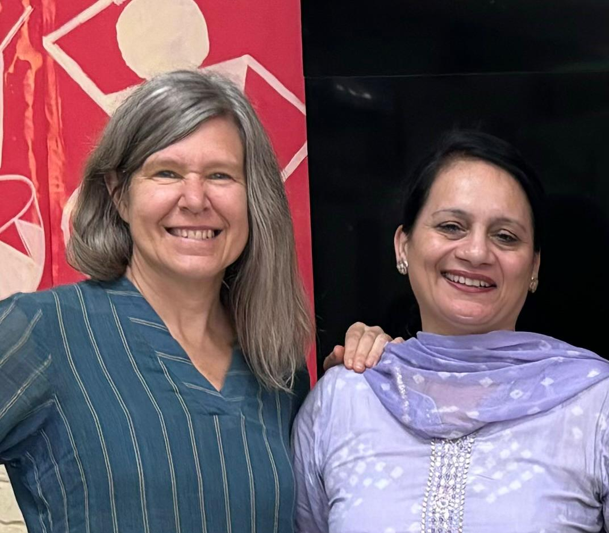

This presentation is based on TESOL International Association’s workshop "Exemplary Teaching of English Learners Through Environmental Sustainability," facilitated in India in July 2024. In this session, the presenters will frame the 4 Cs (Critical Thinking, Communication, Collaboration, and Creativity) as competencies for environmental sustainability as Global Citizenship in the English language classroom. We will demonstrate entry points into the theme of environmental responsibility with activities for secondary school learners. Then we will examine an adaptation and reflection of these ideas from a literature-based lesson in India. In conclusion, we will present some ideas for younger and lower level English students.
|  |
Wendy Coulson is an ELT consultant passionate about the environment. She developed a 2-day environmental program for TESOL International Association and cofacilitated it in India. She has master’s degrees in applied linguistics/TESOL and K-12 education. She earned a certificate in education for sustainable development from the Earth Charter Institute. Seema Dhillon is an environmentalist and language teacher in Chandigarh, India. She holds master’s degrees in English and geography and TESOL International Association certificates in TESOL Core Certificate Program and Training of Trainers. She incorporates sustainable development goals into language teaching and believes sustainability is possible by sensitizing young minds. |